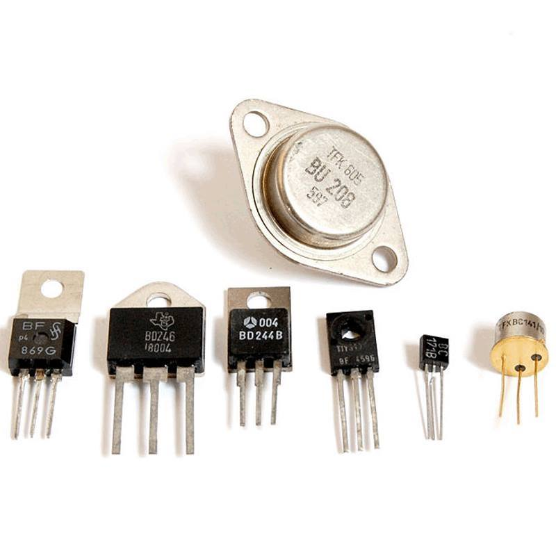
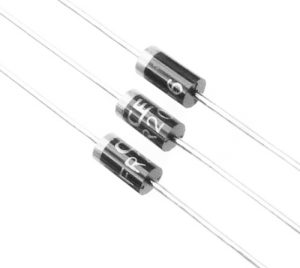
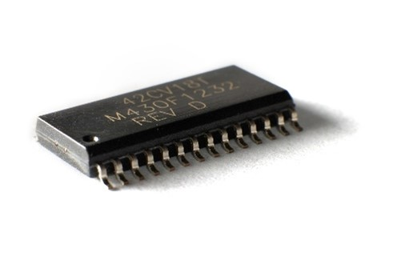
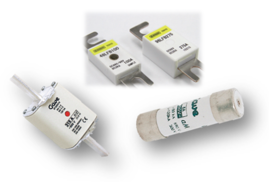
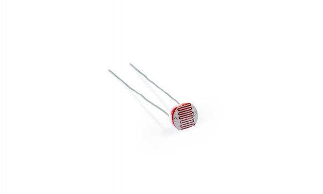
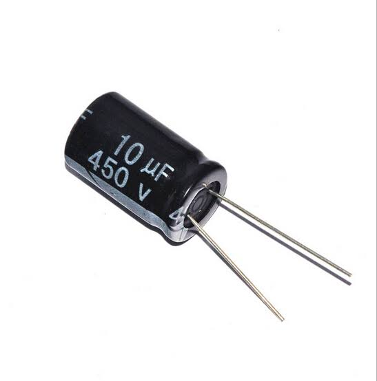

| อุปกรณ์ |
รายละเอียด |
ที่มา |
|  |
ทรานซิสเตอร์คืออะไร
ทรานซิสเตอร์เป็นอุปกรณ์สารกึ่งตัวนำที่ถูกพัฒนาขึ้นมาใช้งานแทนหลอดสุญญากาศซึ่งมีค่าสูญเสียต่ำและประสิทธิภาพสูงกว่ามาก ทรานซิสเตอร์สามารถประยุกต์ใช้งานได้หลายอย่าง เช่น ใช้ขยายสัญญาณ (Amplifier) ทำหน้าที่เป็นสวิตช์ชิง (Switching) กำเนิดสัญญาณใช้รักษาแรงดันไฟฟ้าให้คงที่ เป็นต้น
หน้าที่หลักของทรานซิสเตอร์ คือ “ขยายกระแสไฟฟ้า” โดยการควบคุมกระแสไฟฟ้าอินพุตส่วนน้อยบริเวณขาเบส(Base : B) แล้วทำให้เกิดกระแสไฟฟ้าเอาต์พุตส่วนใหญ่บริเวณขาคอลเล็กเตอร์(Collector : C)นั่นเอง |
ลิงค์ที่มา
|
|  |
ไดโอด (Diode) คือ อุปกรณ์สารกึ่งตัวนำที่ได้จากการนำสารกึ่งตัวนำชนิดพี และสารกึ่งตัวนำชนิดเอ็นมาต่อชนกัน เรียกว่า รอยต่อพีเอ็น (P – N Junction) คุณสมบัติของไดโอด คือ “ยอมให้กระแสไฟฟ้าไหลผ่านได้ในทิศทางเดียว” วิธีการกระตุ้นให้ไดโอดทำงานจะเรียกว่า การไบแอส (Bias) ได้แก่ การให้ไบแอสตรง (Forward Bias) โดยกระแสไฟฟ้าจะไหลผ่านไดโอดได้ และการให้ไบแอสกลับ (Reverse Bias) จะทำให้กระแสไฟฟ้าไหลผ่านไดโอดไม่ได้ จากคุณสมบัติที่นำกระแสไฟฟ้าในทิศทางเดียว จึงนิยมนำไดโอดมาทำเป็นตัวเรียงกระแสไฟฟ้า หรือเร็กติไฟเออร์ (Rectifier) ทำหน้าที่เปลี่ยนแปลงกระแสไฟฟ้าสลับให้เป็นไฟฟ้ากระแสตรง และใช้เป็นตัวแยกสัญญาณในเครื่องรับวิทยุ เป็นต้น ไดโอดมี 2 ขา คือ ขาแอโนด(Anode ; A) หรือขาขั้วบวก และขาแคโทด (Cathode ; K) หรือขาขั้วลบ |
ลิงค์ที่มา |
|  |
ไอซี (IC) ย่อมาจาก Integrated Circuit หรือเรียกว่า แผงวงจรรวม เป็นอุปกรณ์ที่นำเอาอุปกรณ์อิเล็กทรอนิกส์ชนิดต่าง ๆ ได้แก่ ตัวต้านทาน ตัวเก็บประจุ ไดโอด ทรานซิสเตอร์ ส่วนประกอบต่าง ๆ ของวงจรมาต่อรวมกันโดยการย่อส่วนอุปกรณ์อิเล็กทรอนิกส์ดังกล่าวให้มีขนาดเล็กลง แต่ยังมีคุณสมบัติและการทำงานเหมือนเดิม ซึ่งแผงวงจรขนาดเล็กนี้เรียกว่า ชิป (Ship) มีประสิทธิภาพมากขึ้น ประหยัดพลังงานและทรัพยากร |
ลิงค์ที่มา |
|  |
ฟิวส์ (Fuse) เป็นอุปกรณ์ป้องกันวงจรไฟฟ้าและถือเป็นตัวนำไฟฟ้าชนิดหนึ่ง ทำหน้าที่เป็นตัวตัดวงจรไฟฟ้าเมื่อเกิดการลัดวงจร (Short Circuit Current) หรือมีกระแสไฟฟ้าไหลมากเกินไป (Overload Current) ฟิวส์เป็นโลหะผสมที่ ประกอบไปด้วยบิสมัท (Bi) ร้อยละ 50, ตะกั่ว (Pb) ร้อยละ 25 และดีบุก (Sn) ร้อยละ 25 ซึ่งโลหะนั้นจะมีจุดหลอมเหลวต่ำ สาเหตุที่ต้องเลือกใช้โลหะที่มีจุดหลอมต่ำในการทำฟิวส์ก็เพราะจะได้ทำให้วงจรไฟฟ้านั้นขาดง่ายนั้นเอง
Fuse ที่ใช้งานกันในปัจจุบันนั้นสามารถแบ่งออกได้หลายประเภทไม่ว่าจะเป็น ฟิวส์หลอด, ฟิวส์กระบอก, ฟิวส์แรงสูง, ฟิวส์แรงต่ำ เป็นต้น ซึ่งแต่ละประเภทนั้นก็จะมีความเหมาะสมในการใช้งานที่แตกต่างกันไป |
ลิงค์ที่มา |
|  |
ตัวต้านทานชนิดไวต่อแสง หรือ LDR (Light Dependent Resistor) นี้มีหลักการทำงานคือมีแสงมาตกกระทบ จะทำให้เกิดสภาพนำไฟฟ้าขึ้น โดยค่าความต้านทานและแสงสว่างจะแปรผกผันกัน หากค่าความต้านทานจะต่ำลงเมื่อมีแสงสว่างมากขึ้น เมื่อแสงสว่างน้อยลงค่าความต้านทานจะเพิ่มขึ้น สามารถนำไปประยุกต์ใช้ได้หลากหลาย ไม่ว่าจะเป็น switch ระบบตรวจจับแสงเพื่อเปิด-ปิดหลอดไฟอัตโนมัติ อีกทั้งมีราคาถูก จึงถือเป็นตัวเลือกที่เหมาะสมในการทดลองและประยุกต์ใช้ต่างๆ เชื่อได้เลยว่าหากมีติดไว้กล่องในอุปกรณ์ อย่างน้อยต้องมีสักครั้งนึงที่ได้นำมาลองเล่นอย่างแน่นอน |
ลิงค์ที่มา |
|  |
Capacitor มีชื่อเรียกหลายชื่อ เช่น condenser (คอนเดนเซอร์) / Capa (คาปา) / Cap (แคป) / C (ซี) แต่สำหรับ คำว่าcondenser ในทางไฟฟ้าไม่ควรเรียกเพราะ จะไปซ้ำกับชิ้นส่วนนึงในระบบเครื่องปรับอากาศ
Capacitor แปลเป็นไทยหมายถึง ตัวเก็บประจุ เป็นอุปกรณ์อิเล็กโทรนิคตัวหนึ่งที่ใช้งานกันแพร่หลาย มีหน้าที่เก็บและปล่อยประจุไฟฟ้า
ลักษณะโครงสร้าง จะประกอบไปด้วยขั้วไฟฟ้า 2 ขั้ว ต่อไปยังแผ่นเพลท โดยมีฉนวน (ไดอิเล็กตริค) กั้นกลาง |
ลิงค์ที่มา |